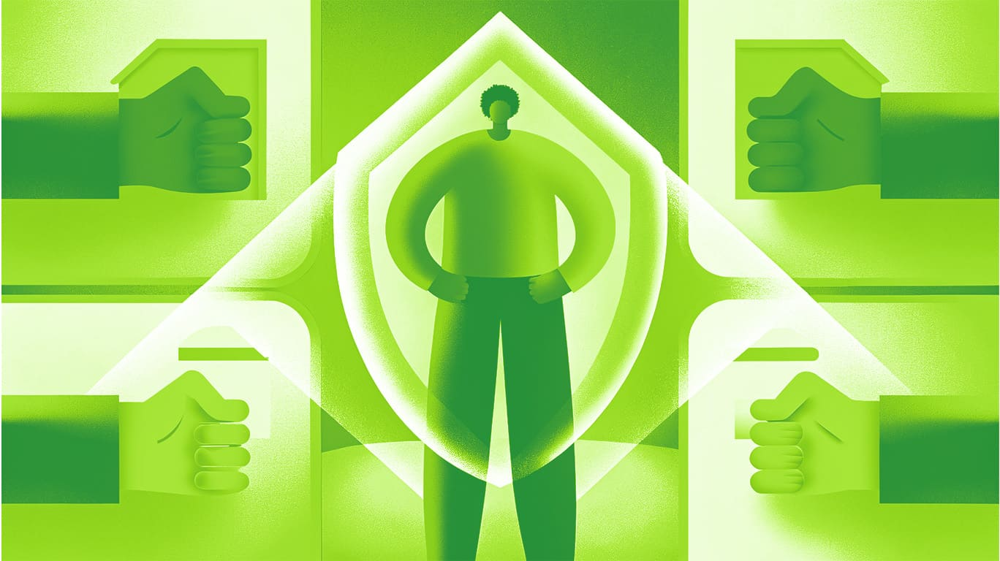

Шпаргалка
Как фрилансеру отстаивать личные границы: советы для начинающих дизайнеров
Ты только начинаешь свой путь во фрилансе, и это здорово! Но, как и в любой работе, здесь есть свои сложности. Одна из них — умение отстаивать свои личные границы. Заказчики бывают разные: кто-то понимает, что у тебя есть своя жизнь, а кто-то считает, что ты должен быть на связи 24/7. Давай разберёмся, как сохранить баланс между работой и личной жизнью, не испортив отношения с клиентами.
«Нет» — это не ругательство: учимся отказывать грамотно
Отказывать — это нормально. Но важно делать это так, чтобы не обидеть заказчика и сохранить хорошие отношения. Вот несколько советов:
- Будь вежлив, но твёрд. Пример: «Спасибо за предложение, но я не смогу взяться за этот проект, так как у меня уже есть другие обязательства. Если что-то изменится, я дам знать!»
- Предложи альтернативу. Если ты не можешь выполнить просьбу, но хочешь помочь, предложи что-то другое. Пример: «Я не смогу сделать макет за два дня, но могу предложить упрощённый вариант, который будет готов быстрее.»
- Не оправдывайся. Ты не обязан объяснять, почему отказываешь. Достаточно просто сказать «нет».

Личные границы — это не просто модное слово, а твоя защита от выгорания и стресса.
Как избежать конфликтов: работаем на опережение
Конфликты случаются, но их можно минимизировать, если действовать грамотно.
Чётко формулируй условия работы: Прописывай в договоре или письме все детали: сроки, количество правок, стоимость. Это поможет избежать недопонимания.
Не бойся задавать вопросы. Если что-то непонятно, уточни сразу. Лучше переспросить, чем потом переделывать работу.
Сохраняй спокойствие. Если заказчик начинает давить, не поддавайся эмоциям. Ответь что-то вроде: «Я понимаю вашу позицию, но давайте найдём решение, которое устроит нас обоих.»

Ты — главный: как ставить свои потребности на первое место
Устанавливай рабочие часы. Определи, в какое время ты доступен для заказчиков, и сообщи об этом. Например: «Я отвечаю на сообщения с 10:00 до 18:00 по будням.»
Не бери больше, чем можешь сделать. Соблазн взять много проектов велик, но перегрузка приведёт к усталости и ошибкам. Лучше меньше, да лучше
Учись говорить «нет». Если заказчик просит сделать что-то сверх договорённостей, напомни ему об условиях.
Практические лайфхаки: как сделать защиту границ привычкой
- Используй шаблоны ответов. Заранее подготовь фразы для типичных ситуаций, например, для отказа или уточнения сроков.
- Документируй всё. Сохраняй переписку и договоры. Это поможет, если возникнут споры.
- Регулярно пересматривай свои границы. То, что работало в начале, может не подходить через год. Адаптируйся под новые обстоятельства.
Фриланс — это про свободу
Отстаивать свои границы — это навык, который приходит с опытом. Не бойся ошибаться и учиться на своих ошибках. Помни: ты не обязан угождать всем. Твоя задача — делать качественную работу и при этом оставаться собой. Удачи 💪

Проверим новые знания? 😏
Пройти тест
10.03.2025